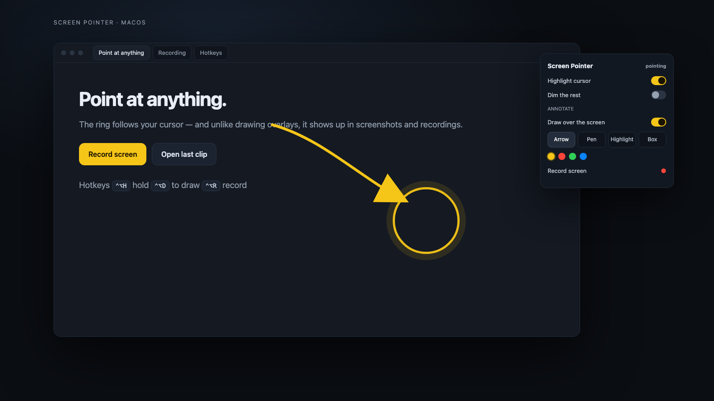

A warm ring around your cursor that survives screenshots and screen recordings — then draw on the screen and record it, without leaving your keyboard.

Drawing apps like Annotate are built to stay out of screen capture — so the person on the other end sees a clean screen no matter what you draw. This one is a normal window: the ring, the arrows and the notes are all in the picture.
Toggle it from any app. You keep typing while the ring sits on the thing you mean.
The overlay ignores the mouse until you ask it to draw, so it is never in the way.
It follows you across Spaces, and it stays out of Mission Control's thumbnails.
One hotkey starts and stops a clip; the ring is part of the recording.
Everything lives on the keyboard, in the menu bar, or in one small panel.
Needs macOS 13 or newer. Build it locally — it is one Swift file and a small app bundle.
git clone https://github.com/ShimonNavon/screen-pointer cd screen-pointer ./build.sh open "$HOME/Applications/Screen Pointer.app"
The first recording asks for Screen Recording permission. The highlight itself needs no permissions at all.